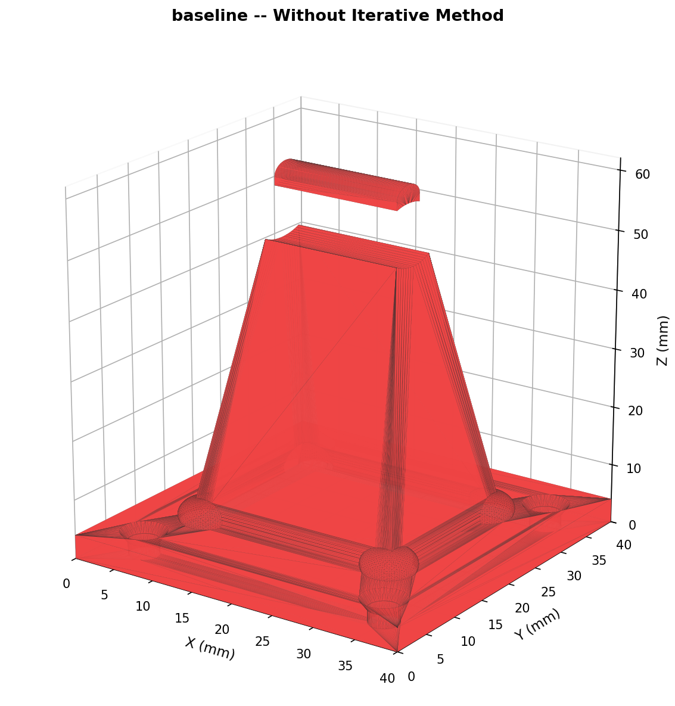
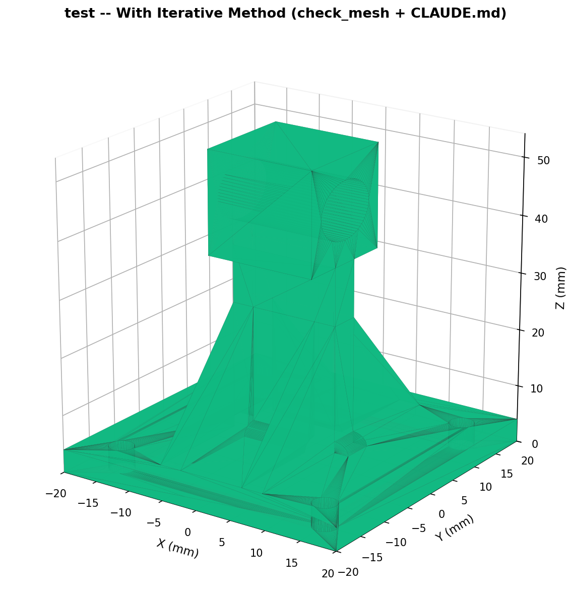

让文本AI"看"懂3D模型 —— 将STL网格转化为多维度结构化自然语言报告， 驱动AI自主完成从需求到可打印模型的设计→分析→修改→收敛全闭环流程。
Claude、GPT 等大语言模型本质上是文本处理器，无法直接理解3D几何。 当用户要求"设计一个支架"时，AI只能输出代码，无法验证模型的实际尺寸、强度和可打印性。
传统3D建模需要人工导出→目视检查→修改→再导出。一次简单的孔距调整也可能导致 非水密或壁厚不足等隐藏问题。对AI来说，没有反馈通道就无法自我纠正。
核心矛盾：AI能写OpenSCAD代码，但无法"看见"自己生成的3D模型—— 如同一个盲人雕塑家，手感再好也无法确认作品的真实形态。
构建一套"文本→3D→文本"的翻译系统，使得文本AI能够：
包围盒、壁厚、孔径、孔距、边距——全部以 mm 精度量化
非水密、分离体、锐边应力集中、悬垂过大——自动检测
分析→对照需求→修改代码→重新分析→收敛——全自动闭环
CLAUDE.md 为 AI 规定了严格的 7 阶段闭环工作流，
check_mesh.py 作为几何↔语言的"翻译层"提供精确的结构化反馈——
二者协同将 AI 从盲目试错转变为定向求解。
| 模块 | 核心能力 | 对AI的反馈价值 |
|---|---|---|
| 精确尺寸 | 包围盒、V/A等效壁厚、Z轴截面、射线穿透厚度 | 告诉AI"你设计的零件实际有多大多厚" |
| 孔洞分析 | 通孔/盲孔检测、孔径、孔距矩阵、边界相对距离 | "孔#1离+X边12mm，离+Y边5mm"——直接指导translate修正 |
| 结构特征 | 惯性矩、锐边应力集中、加强筋识别、悬臂/杠杆预警 | 抗弯刚度量化评估 + 悬臂比超阈值警告 |
| 对称性&拓扑 | 三平面镜像对称度、L/U/平板/管夹自动类型推断 | 判断结构是否平衡——不对称支架安装应力不均 |
| 可制造性 | FDM桥接/悬垂区分、打印方向6轴评估、CNC底切检测 | "Z轴层间最弱，别把受力方向放Z" / "三轴CNC无法加工" |
| 规格对比 | 目标尺寸vs实测偏差、网格噪声自动豁免、PASS/FAIL判定 | 自动区分"真实设计错误"和"多边形逼近噪声" |
_estimate_mesh_resolution() 通过特征边第5百分位估算 $fn 产生的固有误差（$fn=64 ≈ ±0.2mm）。
所有小于此阈值的测量偏差标记为is_mesh_noise=True，AI被告知"禁止修改代码"。
参数修改走60%偏差（防超调），再改走80%。若强度下降≥10分或 real_fails 增加 → 🔙 自动回退到上一轮.scad，切换修改策略。
≥5轮迭代 / 连续2轮无改善 / 连续3轮参数震荡 /
所有FAIL均为噪声 / 致命问题连续3轮无解。
任一触发→立即交付当前最优结果。
草图阶段（前3轮）强制 $fn=16，快速验证坐标尺寸；
定稿阶段切换 $fn=64/128，全面检查水密性和精确孔径。
迭代速度提升 3-5×。
核心原则：只修真正的问题，不追网格噪声。不是所有 FAIL 都需要改代码 ——
is_mesh_noise 标记的偏差由多边形逼近产生，反复修改参数也无法消除。
任务需求：40×40mm底板(4mm厚) + 50mm悬臂(15mm宽) + 末端Φ10通孔 + 四角M3安装孔 + PLA零支撑FDM打印 + 悬臂承重1kg。


👆 肉眼几乎无法分辨两个模型的差异（除了那个莫名其妙的悬浮），但check_mesh.py在60秒内检出了baseline的全部致命缺陷。
| 检查项 | baseline（无方法） | test（有方法） | 后果 |
|---|---|---|---|
| 拓扑连通性 | ❌ 2个分离体 | ✅ 单一实体 | baseline 打印时碎块从热床掉落，整个打印作废 |
| 外形尺寸 Z | ❌ 62mm（超8mm） | ✅ 54mm（精确） | baseline 传感器装不上、对不齐 |
| 真实悬垂（需支撑） | ❌ 96处 | ✅ 14处 | baseline 违反"零支撑"硬约束 |
| 水密性 | ✅ 水密 | ✅ 水密 | 两者均通过 |
| 指标 | baseline | test | 比值 |
|---|---|---|---|
| 文件大小 | 2.2 MB | 271 KB | 8.1× 浪费 |
| 面片数 | 11,764 | 1,648 | 7.1× 浪费 |
| $fn 估算 | ＞$fn=128（过度） | ≈$fn=64（刚好） | — |
| 网格评级 | fine (0.075mm) | good (0.158mm) | 精度够用且高效 |
| 等效壁厚 | 5.64mm（偏厚） | 3.22mm（合理） | 1.75× 材料浪费 |
| 锐边数 | 2,594 | 844 | 3.1× 更粗糙 |
| 坐标原点 | 底板一角（非对称） | 底板中心（对称） | 可维护性差距大 |
| 桥接（无需支撑） | 1,596处 | 18处 | baseline结构复杂 |
评分维度：连通性(×10) · 尺寸精度(×10) · 孔位(×10) · 悬垂控制(×10) · 网格效率(×10) · 强度设计(×10) · 代码可维护性(×10)
CLAUDE.md 为 AI 规定了严格的 7 阶段工作流：需求→编码→分析→对照→修改→治理→收敛。
check_mesh.py 在每个循环末尾注入精确的结构化反馈，AI 的每一次修改都有明确的靶点
（"孔#1 的 to_X_minus 距离不够，translate 加 3mm"），而非无边界的猜测。
以下是 check_mesh.py 对两个模型实际输出的分析报告。同一工具、同一格式、同一分析标准——
但暴露的问题天差地别。
👆 对比两份报告：同一分析工具、同一格式、同一评判标准。baseline 报告以 ⛔ 致命错误开头， test 报告以 ✅ 全部通过收尾。
6大分析模块将盲目的STL文件解构为129维结构化特征，输出Markdown中文报告供AI直接阅读。 首次建立3D几何与LLM之间的双向信息通道。
特征边P05分辨率估算 + is_mesh_noise判定 + 自适应噪声阈值——
使AI能区分"真设计错误"和"多边形逼近误差"，从源头杜绝无效迭代。
阻尼修正（60%→80%渐进）、回滚策略（强度下降自动回退）、5个硬停止条件、 差异化报告（--terse折叠PASS项）——确保AI迭代收敛而非发散。
桥接/悬垂区分、打印方向6轴优化、CNC底切检测、标准孔径映射表(M2-M12)、 悬臂/杠杆比预警——将制造知识前置到设计阶段。
项目的本质贡献不是"又写了一个分析脚本"，而是定义了AI理解3D几何的最小完备信息集—— 回答了"文本AI到底需要知道哪些信息，才能像一个工程师一样评判一个支架？"
目前学术界和工业界（OpenAI, Google, 斯坦福, 腾讯等）的 AI 3D 研究主要分为三大流派， 本项目属于第三流派，并解决了该流派长期未攻克的核心瓶颈。
DreamFusion (Google), Luma AI, Tripo3D, Meshy
文本/单图 → 预测多视角2D图像 → NeRF/3DGS逆向渲染 → 3D体素或网格
Point-E (OpenAI), Shape-E
Diffusion/Transformer → 直接吐出3D点云坐标 → 算法连成三角面片
DeepCAD, InverseCSG
LLM + OpenSCAD / PythonOCC 代码生成
放弃让AI直接生成面片，让AI编写具有严格几何逻辑的CAD脚本
🎯 本项目正是第三流派的代表。但目前的 LLM 写 CAD 代码是"开环"的—— LLM 像瞎子盲写代码，脑海中想象坐标系，极易出现坐标算错、部件未相交、悬臂过长等错误。 学术界长期缺少一种有效方法，能把 3D 空间的错误翻译回 LLM 听得懂的语言来实现自我纠正。 本项目解决了这一瓶颈。
现有痛点：LLM 看不懂 .stl 文件，也缺乏物理直觉。
本项目的解法：check_mesh.py 扮演 LLM 的"眼睛"和"游标卡尺"。
不强迫 LLM 处理 3D 视觉数据，而是将复杂拓扑（连通性、水密性）、
可制造性（桥接 vs 悬垂、底切）和物理力学（悬臂比、惯性矩）
降维翻译成结构化的自然语言和 JSON。
"代码 → 渲染 → 物理提取 → 文本反馈 → 代码"——真正意义上的 Agentic Workflow。
现有痛点：LLM 配合多边形渲染器做闭环时极易陷入死循环——设了 4.2mm 的孔，
测量出 4.15mm（$fn 多边形逼近误差），LLM 就不断修改代码试图补偿这 0.05mm。
本项目的解法：通过 P05 特征边算法计算当前 $fn 下的
"最大理论逼近误差"，教导 LLM 忽略阈值内的偏差。
直接解决了 AI 在数字孪生系统中典型的"过拟合/过度补偿"问题。
现有痛点：LLM 空间心算能力有限，极易矫枉过正——孔位偏左 2mm，
下次修改可能直接移到右边去。
本项目的解法：工作流规定"移动偏差的 60%"（防超调），
强度下降≥10分或 real_fails 增加→强制回滚上一版本（Explore vs. Exploit）。
将经典 PID 控制的阻尼概念和强化学习的探索-利用权衡
引入 Prompt 工程——高阶系统设计的体现。
目前的文生 3D 模型拿到工厂去，工程师会把你赶出来——全是破面、尺寸不对。 本系统生成的模型从诞生的第一秒起就保证了：水密性 ✅ · 满足材料最小壁厚 ✅ · 公差达到机械装配级别（M4 紧配孔 4.2mm）✅ · 经过 FDM/CNC 工艺检查 ✅。 它生成的不是"3D 资产"，而是真正的"工业零件"。
3D 数据通常极其庞大，但本工作流实现了极致的 Token 效率：
.scad 代码（几十个 Token）--terse 精简模式将物理验证报告压缩到几百 Token这意味着——用极低的 API 成本和极快的速度完成复杂 3D 机械零件迭代。 对比 NeRF 模型动辄需要多张 A100 算十几分钟，本项目在普通轻薄本上调用 API 即可实现。
其他 AI 生成的 .stl 或 .obj 是"死的"（Dead Mesh），
想把高度从 50 改成 60 几乎不可能。而本 Agent 最终交付的是参数化 OpenSCAD 源代码——
纯"白盒"，用户只需修改顶部 height = 60;，
模型就能完美再生。后续维护和二次开发成本几乎为零。
| 阶段 | 动作 | 产出 | 检查点 |
|---|---|---|---|
| ① 需求澄清 | 确认功能、尺寸、材质、公差、制造方式 | spec.json | — |
| ② 编码+导出 | 编写OpenSCAD（$fn=16草图/64定稿）， openscad.com 命令行导出STL |
design.scad + .stl | 布尔运算eps容差、union完整性 |
| ③ 多维分析 | check_mesh.py 6模块全量分析 | analysis.json + .md | ⛔连通性·🔬网格质量·📏尺寸·🔩孔洞·💪强度·🏭制造 |
| ④ 需求对照 | spec.json vs 实测值，自动PASS/FAIL+噪声判定 | 偏差报告 | real_fails vs noise_fails 区分 |
| ⑤ 迭代修改 | 按致命→强度→优化顺序修改OpenSCAD变量 | 新版.scad | 阻尼修正·单轮一变量·iteration_log.md |
| ⑥ 治理决策 | 检查5个硬停止条件，判断继续/回滚/交付 | 继续 or 交付 | 迭代预算·收敛停滞·来回震荡·噪声追逐 |
| ⑦ 最终交付 | 满足收敛条件后输出完整交付包 | .scad + .stl + 报告 + 迭代日志 + 豁免清单 | 强度≥60, real_fails=0, 壁厚达标 |
在四种典型支架结构上进行了端到端闭环迭代验证：
| 支架类型 | 参数 | 孔数 | 水密 | 强度评分 | 收敛轮次 |
|---|---|---|---|---|---|
| L型支架 | 50×40×44mm · 板厚4mm | 2 + 2 | ✅ | 90/100 | 2轮 |
| U型槽支架 | 60×50×40mm · 板厚5mm | 2 + 2 | ✅ | 100/100 | 1轮 |
| 平板安装支架 | 80×60×9mm · 中央凸台 | 4角 + 1中 | ✅ | 100/100 | 2轮 |
| 管夹支架 | 40×40×45mm · R20mm | 4法兰 | ✅ | 100/100 | 1轮 |
* 每个模型从 spec.json 出发，经过 check_mesh.py 分析 + AI修改 OpenSCAD 变量， 至 real_fails=0 且强度≥60 为止。平均 1-2 轮迭代即可收敛。
80%的非水密错误来自布尔减切时difference()中减去的形体未贯穿被切面。
在提示词中固化eps=0.01容差模板后，此类错误基本消失。
未使用方法的AI倾向于选择底板一角为原点，导致孔位用绝对坐标表示，修改困难。 迭代方法使AI主动改为底板中心原点+对称坐标，代码可读性大幅提升。
$fn 是迭代效率的关键杠杆——$fn=16 时分析耗时仅 $fn=128 的 1/8， 而尺寸误差仍可接受（±0.5mm）。渐进渲染策略让3轮迭代总时间 < 1次高精度分析。
将当前的几何启发式强度评估升级为基于FEniCS/CalculiX的有限元应力分析， 输出真实的von Mises应力云图和位移场——而非仅靠V/A比和悬臂距离估算。
将分析输出作为拓扑优化的目标函数输入（如最小柔度约束下的体积最小化）， 以 SIMP/BESO 方法自动生成最优材料分布，AI负责将优化结果转换为可打印的OpenSCAD参数化结构。
用户说"我要一个装在桌子边缘的显示器支架"，系统自动完成：需求理解→方案生成→ 多轮迭代优化→生成G-code→用户确认→一键打印。闭环中人类只需在起点输入需求和终点按下打印键。
当前的闭环仅作用于 OpenSCAD 代码——但 check_mesh.py 本身也可以是迭代的对象。
在每一轮支架设计中，AI 发现某个反复出现却未被脚本捕获的问题（例如某种特定拓扑结构总是导致底切），
它可以自主修改 check_mesh.py，添加新的检测函数或调整判定阈值，
使分析工具在下一次迭代中变得更"聪明"。经过成百上千次支架设计任务的累积进化，
check_mesh.py 将从一套预设的静态规则，成长为积累了海量工程经验的动态知识库。
check_mesh.py (≈1800行) —— 6大分析模块 + Markdown/JSON双输出 + --terse精简模式CLAUDE.md —— 7阶段闭环迭代流程 + 防死循环机制 + OpenSCAD编码最佳实践comparison_report.md —— baseline vs test 的7维度详细对比分析